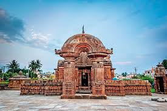

Mukteshwar Temple

Mukteshwar Temple
Mukteshwara Temple (IAST: Mukteśwara; also spelt Mukteswara) is a 10th-century Hindu temple dedicated to Shiva located in Bhubaneswar, Odisha, India. The temple dates back to 950–975 CE[1] and is a monument of importance in the study of the development of Hindu temples in Odisha. The stylistic development of the Mukteswara Temple marks the culmination of all earlier developments, and initiates a period of experiment which continues for an entire century, as seen in such temples as the Rajarani Temple and Lingaraj temple, both located in Bhubaneswar.[2] It is one of the prominent tourist attractions of the city.
History
The Mukteshvara Temple is found to be the earliest work from the Somavamshi period. Most scholars believe that the temple is the successor to Parashurameshvara Temple and was built earlier to the Brahmeswara Temple (1060 CE). Percy Brown puts the date of construction of the temple to 950 CE. The presence of a torana, which is not part of any other temple in the region, makes this temple unique and some of the representations indicate the builders were starters of a new culture.[4] K.C.
Panigrahi places the temple to be built during 966 CE and postulates that the Somavamshi king Yayati I built the temple. He also associates the legend of Kirtivassa to this temple, but the postulation is not accepted as Kirtivasa is associated with Lingaraja, though both were built at the same time for the same deity, Shiva. There is no historic evidence to conclude that Yayati had built the temple.
Architecture
This architecture is one of the basic reasons why Mukteshvara Temple is also known as the "Gem of Odisha architecture" or "Kalinga Architecture" .[6] The temple faces west and is constructed in a lower basement amidst a group of temples. The pyramidal roof to the jagamohana present in the temple was the first of its kind over the conventional two tier structure.[7] The temple is a small one compared to other larger temples in Bhubaneswar.
The temples is enclosed within an octagonal compound wall with elaborate carvings on it. It is believed that the experiment of newer pattern in the temple showed a mature phase compared to its predecessors and culminated the beginning of replication of similar pattern in the later temples in the city. The temple has a porch, called torana, which acts as the gateway to the octagonal compound. The temple has two structures namely, the vimana (structure above the sanctum) and a mukhasala, the leading hall, both of which are built on a raised platform. The temple is the earliest to be built in pithadeula type.
Porch
The most important feature of the Mukteshvara Temple is the torana, or the arched gateway, dating back to about 900 CE and showing the influence of Buddhist architecture.[8] The arched gateway has thick pillars that have strings of beads and other ornaments carved on statues of smiling women in languorous repose. The porch is a walled chamber with a low, massive roof and internal pillars. The combination of vertical and horizontal lines is skillfully arranged so as to give dignity to buildings of moderate height. This early astylar form of the temple is best illustrated in this temple.[9] The gateway has sculptures that range from elaborate scrolls to pleasant female forms and figures of monkeys and peacocks.[10] The front and back of the arch are similar in design.
Vimana
The Vimana is square in plan and is built in a raised platform with pilasters in each facade. The shikara is small compared to other temples; it has four Natarajas and four kirthimukhas on the four faces. The top portion of the shikara has the kalasa.[4] The shikara is 10.5 metres (34 ft) tall, with every inch sculpted with decorative patterns, architectural patterns and sculpted figures. A new form of decoration called bho, possibly developed here, became a prominent feature in later Odishan temples. It is a highly ornate chaitya window crowned by masked demon head and dwarf figures.
Sanctum
The sanctum is sculpted with beautiful damsels exhibiting feminine charms entwined with nagas and naginis. The sanctum is cubical from the inside with offset walls on the outside.
Jagamohana
This distinctive 10th-century temple is one of the smallest and compact temples. The jagamohana is 35 m (115 ft) tall.[10] It is decorated with intricate carvings by the Vishwakarma Moharana sculptors. The temple is regarded as a gem of Nagara architecture of Kalinga architecture.
Except for the rectangular plan of its jagamohana, it is the earliest example of what may be termed proper Odisha temple type; a vimana with a curvelinear spire and a jaganmohana with a stepped pyramidal roof.[13] The temple's red sandstone is covered with exquisite carvings of lean sadhus or holy men and voluptuous women encrusted with jewels. The images of Ganga and Yamuna are carved next to Chanda and Prachanda.
The torana is present in front of the jagamohana. The figure of Lakulisa, seated in bhumispara-mudra and holding a lakuta is present on the lintel of the jagamohana. The figures of Gajalakshmi, Rahu and Ketu are also sculpted in the structure.[4] A small extension from the side roof of the jagamohana has the image of a lion sitting on its hind legs.
The exterior walls of the structure are decorated with pilasters with nagas and naginis
Others
The doorway to the inner sanctum houses the image of Ketu with three hooded snakes, commonly regarded as the ninth planet in the Hindu mythology.[10] There is a tank in the eastern side of the temple and a well in the south-western corner. A dip in the first known as the Marichi Kunda is believed to cure infertility in women. There are other shrines within the temple complex with lingam inside, which were used as offering shrines.[10] The doorway of the temple is ornate.[11] The temple is enclosed by a low compound wall that follows the contours of the temple. The temple has sculptures both inside and outside the structure. The compound walls leaves a very small passage separating the shrine